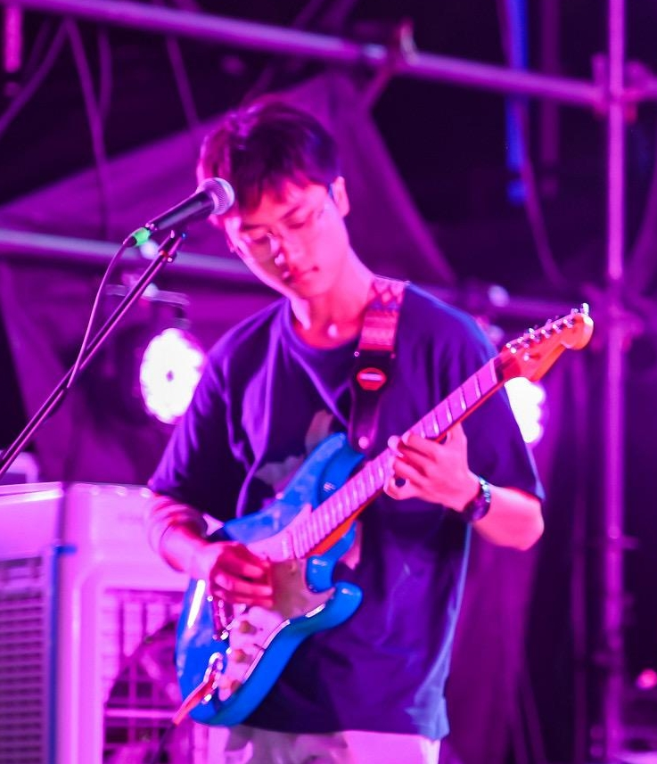
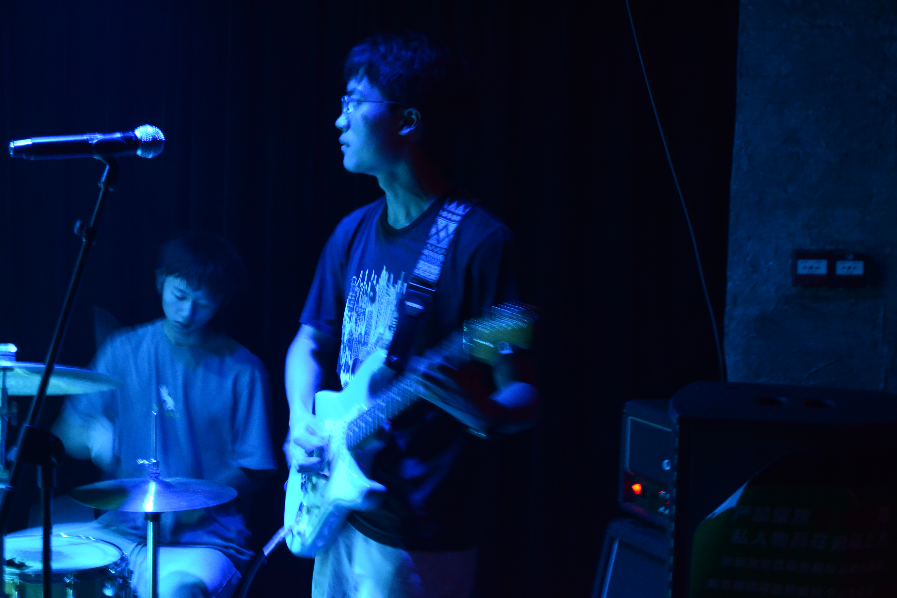
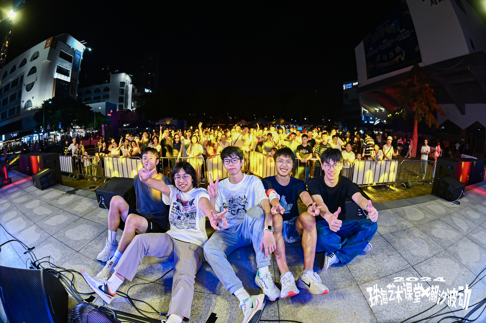

The Dispersions
The Dispersions is a student band I co-founded in January 2023. I play rhythm guitar and sing co-lead, and I write original songs with the band. We play campus shows, band competitions, small live rooms, and festivals in Hong Kong and Zhuhai.


